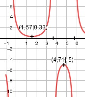

Aufgabe 182 3 - 2 * sin x f(x) = --------------- x im Bogenmaß 1 + 2 * sin x Quotientenregel erste Ableitung: u = 3 - 2 * sin x, u' = -2 * cos x v = 1 + 2 * sin x, v' = 2 * cos x -2 * cos x * (1 + 2 * sin x) f'(x) = ------------------------------- - (1 + 2 * sin x)2 2 * cos x * (3 - 2 * sin x) - ----------------------------- (1 + 2 * sin x)2 -2 * cos x - 4 * cos x * sin x f'(x) = -------------------------------- - (1 + 2 * sin x)2 6 * cos x + 4 * cos x * sin x - ------------------------------- (1 + 2 * sin x)2 -8 * cos f'(x) = ------------------ (1 + 2 * sin x)2 Quotientenregel und Kettenregel zweite Ableitung: u = -8 * cos x, u' = 8 * sin x v = (1 + 2 * sin x)2 v' = 2 * (1 + 2 * sin x) * 2 * cos x 8*sin x*(1 + 2*sin x)2 f''(x) = ------------------------ - (1 + 2 * sin x)4 4*cos x*(1 + 2*sin x)*(- 8)*cos x - ----------------------------------- (1 + 2 * sin x)4 (1 + 2*sin x)*[8*sin x f''(x) = ------------------------ + (2 + sin x)4 16*sin2x + 32*cos2 x] + ----------------------- (2 + sin x)4 8 * sin x + 16 * sin2 x + 32 * cos2 x f''(x) = --------------------------------------- (1 + 2 * sin x)3 Zur Beurteilung, ob f'''(x) ≠ 0: u = 8 * sin x + 16 * sin2 x + 32 * cos2 x Kettenregel: u' = 8*cos x + 32*sin x*cos x - 64*cos x*sin x u' = 8 * cos x - 32 * cos x * sin x u' 8 * cos x - 32 * cos x * sin x f'''(x) = --- = -------------------------------- v (1 + 2 * sin x)3 --> ist ≠ 0 für alle x ≠ π/2, (3/2)π, 0,25, 2,89 Polstelle: 1 + 2 * sin x = 0 |-1 2 * sin x = -1 |:2 sin x = -0,5 ≙ -30° das sind im Einheitskreis im 3. Quadranten 1 7 180° + 30° = 210° ≙ π + --- π = --- π = 3,665 6 6 und im 4. Quadranten 1 11 360° - 30° = 330° ≙ 2π - --- π = ---- π = 5,76 6 6 Für x --> 7π/6 oder 11π/6 geht f(x) gegen ± ∞ Definitionsbereich: 0 ≤ x ≤ 2π x ≠ 3,665 und 5,76 Symmetrie zur y-Achse bzw. zum Punkt (0|0): 3 – 2 * sin (-x) f(-x) = ------------------ 1 + 2 * sin (-x) 3 + 2 * sin x = ---------------- ≠ f(x) 1 – 2 * sin x --> keine Achsensymmetrie 3 + 2 * sin x -f(-x) = - --------------- 1 – 2 * sin x -3 – 2 * sin x = ---------------- ≠ f(x) 1 – 2 * sin x --> keine Punktsymmetrie Wertebereich: 0,33 ≤ f(x) < ∞, -∞ < f(x) ≤ -5 (siehe Extrempunkte) Nullstellen: f(x) = 0 3 - 2 * sin x ---------------- = 0 |*(1 + 2 * sin x) 1 + 2 * sin x 3 - 2 * sin x = 0 |+2 * sin x 2 * sin x = 3 |:2 sin x = 1,5 > 1 --> keine Lösung --> keine Nullstellen Schnittpunkt mit der y-Achse: x = 0 3 - 2 * sin 0 f(0) = ---------------- = 3 1 + 2 * sin 0 Sy(3|0) Extrempunkte: f'(x) = 0 -8 * cos ------------------ = 0 |*(1 + 2 * sin x)2 (1 + 2 * sin x)2 -8 * cos = 0 |:(-8) cos x = 0 x1 = π/2 = 1,57 ≙ 90°, 3 - 2 * sin 1,57 f(1,57) = ------------------- = 0,33 1 + 2 * sin 1,57 8 * sin 1,57 + 16 * sin2 1,57 f''(1,57) = -------------------------------- + (1 + 2 * sin 1,57)3 32 * cos2 1,57 + --------------------- > 0 (1 + 2 * sin 1,57)3 --> Tiefpunkt (1,57|0,33) x2 = (3/2)π = 4,71 ≙ 270°, 3 - 2 * sin 4,71 f(4,71) = ------------------- = - 5 1 + 2 * sin 4,71 8 * sin 4,71 + 16 * sin2 4,71 f''(4,71) = -------------------------------- + (1 + 2 * sin 4,71)3 32 * cos2 4,71 + ---------------------- < 0 (1 + 2 * sin 4,71)3 --> Hochpunkt (4,71|-5) Wendepunkte: f''(x) = 0 8*sin x + 16*sin2x + 32*cos2 x -------------------------------- = 0 |*(1+2*sinx)3 (1 + 2 * sin x)3 8 * sin x + 16 * sin2x + 32 * cos2 x = 0 sin x + 2 * sin² x + 4 * (1 – sin² x) = 0 sin x + 2 * sin² x + 4 – 4 * sin² x = 0 -2 * sin² x + sin x + 4 = 0 |*(-1) 2 * sin² x - sin x – 4 = 0 A, B, C – Formel: A = 2, B = -1, C = -4 x1,2 = x1,2 = x1,2 = x1 = 1,686 x2 = -1,186 beide außerhalb des Definitionsbereiches für sin x --> keine Lösung --> keine Wendepunkte Graph:
